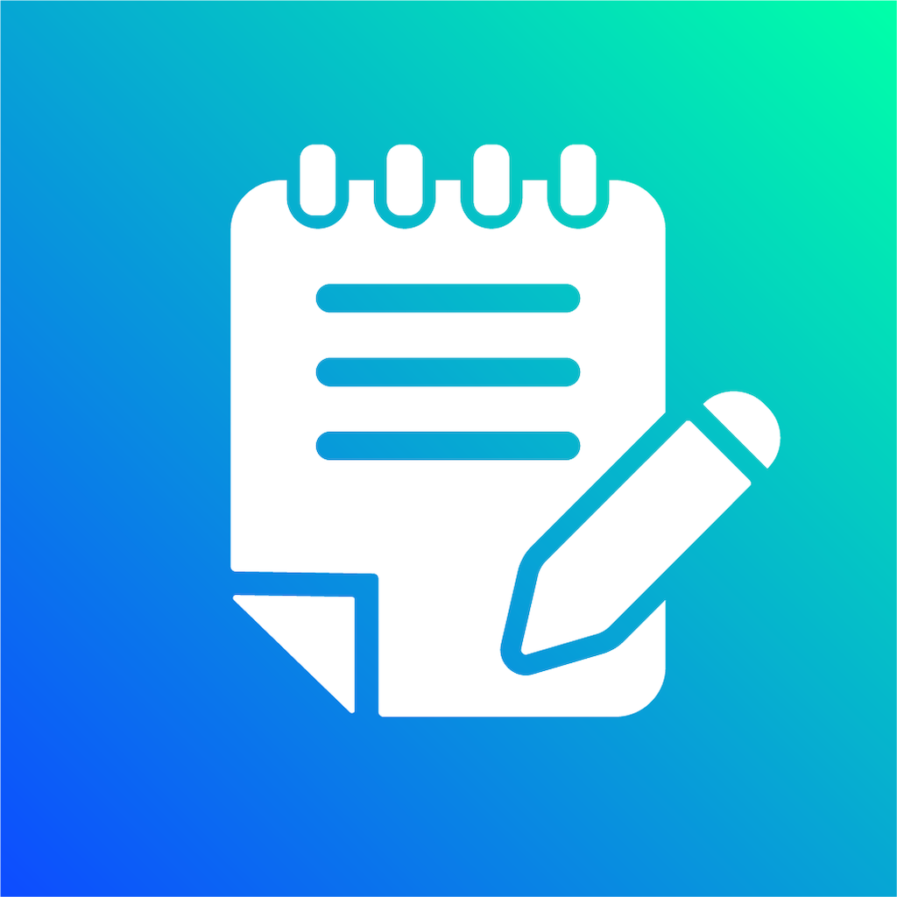
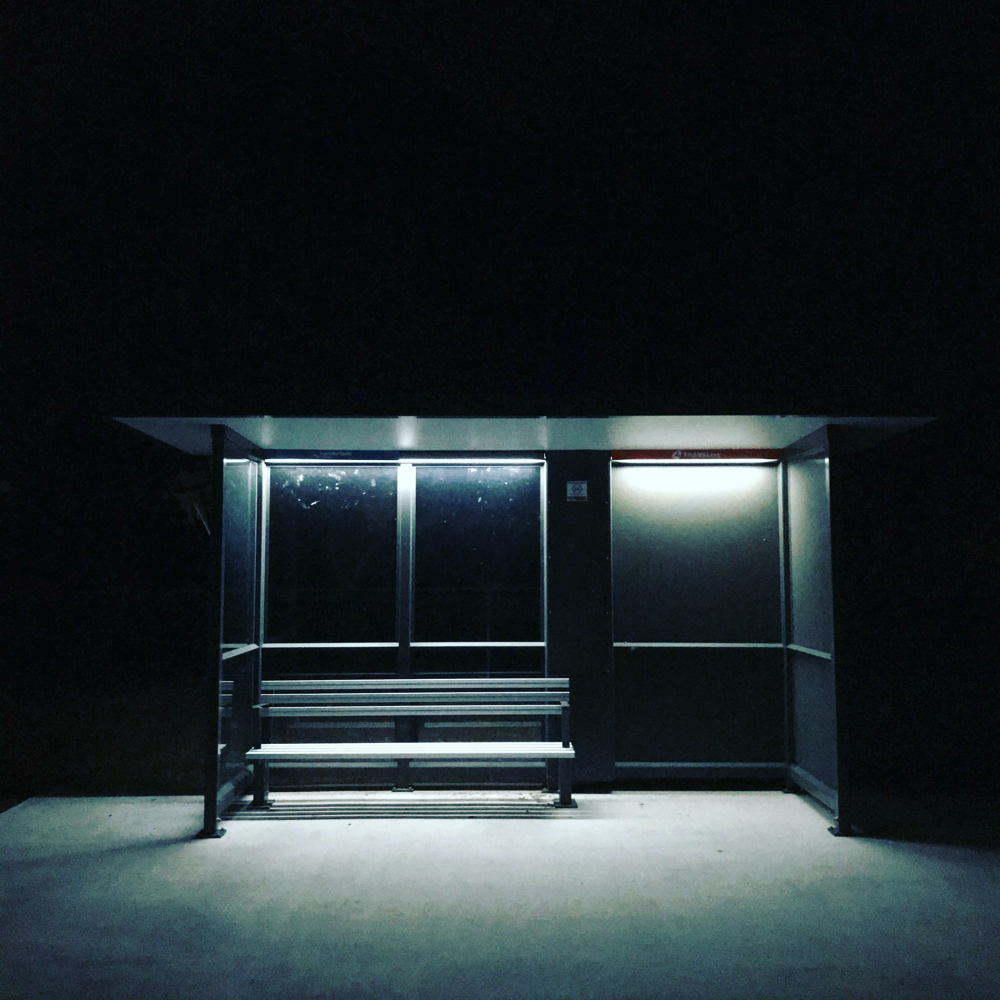

Welcome!
I'm Luis Estevez, a Computer Science student at SUNY Oswego
About:
I started attending SUNY Oswego in 2017, and plan on graduating in 2021.
I was born/raised in Brooklyn, New York which is where I still reside.
I am pursuing a bachelor's degree in Computer Science with a minor in Cognitive Science. I have
experience programming in Java, Python, Scala, Clojure, C, Prolog, Swift, HTML, and CSS.
This site is one of the first websites that I built and published, so this can be seen as a good
representation of my HTML/CSS skills! Here I will be posting some of the work I have worked on
as well as some programs I've completed!
Recently I published a notepad application onto the iOS app store.
This was a side project I started in order to learn Swift.
I liked the idea of having an app I wrote on the app store, so I did exactly that!
Programming has been a passion of mine for some time, so I'm always looking for new
challenges/opportunities to encounter!
Projects (In Order of Newest to Oldest):

Knotepad
A special side project of mine that started as a project to learn Swift in my free time!
A simple notes organizer for your iOS device.
Click here for more information:
View On iOS App Store
Knotepad Support Page

CentroBusApp
Final Assignment of the semester for Software Engineering (CSC380)
Allows users to track Centro Bus along the SUNY Oswego Campus
Click here for more information:
Github Repository

Project Summarizer
Final Assignment of the semester for Programming Languages (CSC344)
Click here for more information:
Github Repository

Laser Beams!
Fourth Assignment of the semester for Programming Languages (CSC344)
Click here for more information:
Github Repository

Pattern Matching
Third Assignment of the semester for Programming Languages (CSC344)
Click here for more information:
Github Repository

Nor-Logic Converter
Second Assignment of the semester for Programming Languages (CSC344)
Click here for more information:
Github Repository

Turing Machine
First Assignment of the semester for Programming Languages (CSC344)
Click here for more information:
Github Repository
Luis Estevez
contact: luisestvz67@gmail.com